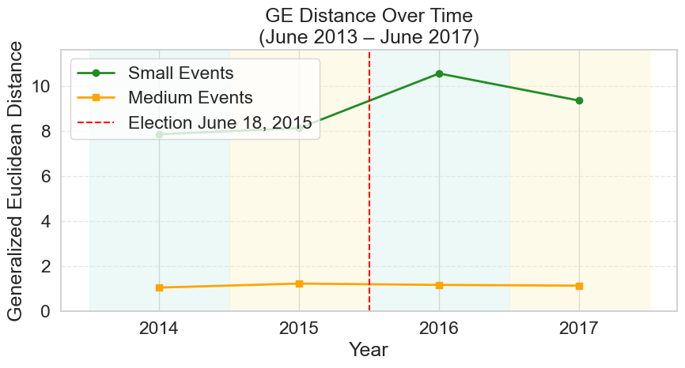
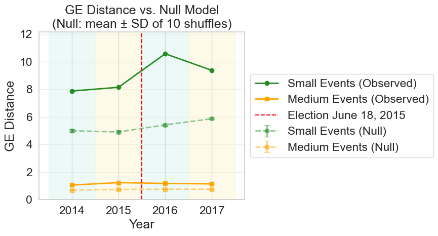

Notebook 3: Ideology Analysis — Generalized Euclidean Distance#
Measures ideological polarization in the event-event networks using the Generalized Euclidean (GE) measure (Coscia, 2020; Hohmann et al., 2023), and evaluates statistical significance via a shuffle-based null model.
Inputs from ../data/processed/:
backboned_graph_{key}.pkl— noise-corrected event-event LCC graphsfiltered_events_{key}.pkl— event DataFrames (LCC only)filtered_users_{key}.pkl— user DataFrames (connected to LCC events)
Outputs (displayed inline):
Table 7.1 — ideology SD statistics
Table D.2 — GE distance results
Table D.3 — event network basic statistics
Figure 7.1 — GE distance over time
Figure 7.2 — GE null model results
Pipeline
Compute GE distance for each event-event network
Run 10-shuffle null model per network
Compute Table 7.1 ideology SD statistics
Compute Table D.3 event network statistics
Plot Figures 7.1 and 7.2
import pickle
import random
from pathlib import Path
import matplotlib.pyplot as plt
import networkx as nx
import numpy as np
import pandas as pd
import seaborn as sns
from scipy.sparse.csgraph import laplacian
sns.set_theme(rc={"lines.linewidth": 2}, font_scale=1.5)
sns.set_style("whitegrid")
DATA_DIR = Path('../data/processed')
KEYS = [
'small_2013-2014', 'small_2014-2015', 'small_2015-2016', 'small_2016-2017',
'medium_2013-2014', 'medium_2014-2015', 'medium_2015-2016', 'medium_2016-2017',
]
YEARS = np.array([2014, 2015, 2016, 2017])
ELECTION_YEAR = 2015.5
SHADING_RANGES = [2013.5, 2014.5, 2015.5, 2016.5, 2017.5]
SHADES = ["#D1F2EB", "#FCF3CB"]
1. Load Inputs#
def load_pkl(path):
with open(path, 'rb') as f:
return pickle.load(f)
backboned_graphs = {k: load_pkl(DATA_DIR / f'backboned_graph_{k}.pkl') for k in KEYS}
filtered_events = {k: pd.read_pickle(DATA_DIR / f'filtered_events_{k}.pkl') for k in KEYS}
filtered_users = {k: pd.read_pickle(DATA_DIR / f'filtered_users_{k}.pkl') for k in KEYS}
print("Loaded backboned graphs, filtered events, and filtered users for all 8 datasets.")
for k in KEYS:
G = backboned_graphs[k]
print(f" {k}: {G.number_of_nodes():,} nodes, {G.number_of_edges():,} edges")
Loaded backboned graphs, filtered events, and filtered users for all 8 datasets.
small_2013-2014: 8,210 nodes, 120,395 edges
small_2014-2015: 9,603 nodes, 161,359 edges
small_2015-2016: 13,838 nodes, 255,862 edges
small_2016-2017: 17,459 nodes, 346,228 edges
medium_2013-2014: 4,709 nodes, 372,565 edges
medium_2014-2015: 5,779 nodes, 542,037 edges
medium_2015-2016: 7,764 nodes, 812,899 edges
medium_2016-2017: 7,573 nodes, 691,767 edges
2. Generalized Euclidean Distance#
The GE measure (Coscia, 2020) quantifies the structural cost of transporting opinion mass from one ideological group to another across the network. Each event receives an opinion value from its weighted ideology score:
o⁺: right-leaning component —
max(ideology, 0)o⁻: left-leaning component —
max(−ideology, 0)
The GE distance is: $\(\text{GE} = \sqrt{(\mathbf{v}^+ - \mathbf{v}^-)^\top \mathbf{L}^+ (\mathbf{v}^+ - \mathbf{v}^-)}\)$
where L⁺ is the Moore-Penrose pseudoinverse of the graph Laplacian.
def compute_ge(G):
"""Compute GE distance for a weighted graph with ideology node attributes.
Nodes missing or with NaN ideology are treated as neutral (contribute 0
to both opinion vectors and cancel out in the difference).
"""
A = nx.adjacency_matrix(G, weight='weight').todense().astype(float)
L = np.linalg.pinv(laplacian(A, normed=False))
nodes = list(G.nodes())
ideology = {
n: G.nodes[n].get('weighted_ideology_min_max', np.nan)
for n in nodes
}
v_plus = np.array([max(ideology[n], 0) if pd.notna(ideology[n]) else 0.0 for n in nodes])
v_minus = np.array([abs(ideology[n]) if ideology[n] < 0 else 0.0
if pd.notna(ideology[n]) else 0.0 for n in nodes])
diff = v_plus - v_minus
return float(np.sqrt(diff.T @ L @ diff))
ge_results = {}
for key, G in backboned_graphs.items():
ge = compute_ge(G)
ge_results[key] = ge
print(f"{key}: GE = {ge:.4f}")
/Library/Frameworks/Python.framework/Versions/3.13/lib/python3.13/site-packages/numpy/linalg/_linalg.py:3383: RuntimeWarning: divide by zero encountered in matmul
return _core_matmul(x1, x2)
/Library/Frameworks/Python.framework/Versions/3.13/lib/python3.13/site-packages/numpy/linalg/_linalg.py:3383: RuntimeWarning: overflow encountered in matmul
return _core_matmul(x1, x2)
/Library/Frameworks/Python.framework/Versions/3.13/lib/python3.13/site-packages/numpy/linalg/_linalg.py:3383: RuntimeWarning: invalid value encountered in matmul
return _core_matmul(x1, x2)
/tmp/claude-501/ipykernel_81367/3240956658.py:21: RuntimeWarning: divide by zero encountered in matmul
return float(np.sqrt(diff.T @ L @ diff))
/tmp/claude-501/ipykernel_81367/3240956658.py:21: RuntimeWarning: overflow encountered in matmul
return float(np.sqrt(diff.T @ L @ diff))
/tmp/claude-501/ipykernel_81367/3240956658.py:21: RuntimeWarning: invalid value encountered in matmul
return float(np.sqrt(diff.T @ L @ diff))
small_2013-2014: GE = 7.8695
small_2014-2015: GE = 8.1389
small_2015-2016: GE = 10.5686
small_2016-2017: GE = 9.3653
medium_2013-2014: GE = 1.0556
medium_2014-2015: GE = 1.2344
medium_2015-2016: GE = 1.1745
medium_2016-2017: GE = 1.1416
3. Null Model#
Ideology labels are shuffled randomly across events 10 times per graph. The resulting distribution shows the expected GE distance under random assignment, providing a baseline for assessing the degree of ideological clustering.
N_SHUFFLES = 10
ge_null = {}
for key, G in backboned_graphs.items():
print(f"{key}...")
A = nx.adjacency_matrix(G, weight='weight').todense().astype(float)
L = np.linalg.pinv(laplacian(A, normed=False))
nodes = list(G.nodes())
ideology = {
n: G.nodes[n].get('weighted_ideology_min_max', np.nan)
for n in nodes
if pd.notna(G.nodes[n].get('weighted_ideology_min_max', np.nan))
}
values = list(ideology.values())
node_keys = list(ideology.keys())
shuffled_ge = []
for _ in range(N_SHUFFLES):
random.shuffle(values)
shuffled = dict(zip(node_keys, values))
v_plus = np.array([max(shuffled.get(n, 0), 0) for n in nodes])
v_minus = np.array([abs(shuffled[n]) if n in shuffled and shuffled[n] < 0 else 0.0 for n in nodes])
diff = v_plus - v_minus
shuffled_ge.append(float(np.sqrt(diff.T @ L @ diff)))
ge_null[key] = shuffled_ge
print(f" Mean ± SD: {np.mean(shuffled_ge):.4f} ± {np.std(shuffled_ge):.4f}")
small_2013-2014...
/tmp/claude-501/ipykernel_81367/2057116162.py:29: RuntimeWarning: divide by zero encountered in matmul
shuffled_ge.append(float(np.sqrt(diff.T @ L @ diff)))
/tmp/claude-501/ipykernel_81367/2057116162.py:29: RuntimeWarning: overflow encountered in matmul
shuffled_ge.append(float(np.sqrt(diff.T @ L @ diff)))
/tmp/claude-501/ipykernel_81367/2057116162.py:29: RuntimeWarning: invalid value encountered in matmul
shuffled_ge.append(float(np.sqrt(diff.T @ L @ diff)))
Mean ± SD: 4.9932 ± 0.1032
small_2014-2015...
Mean ± SD: 4.9017 ± 0.1381
small_2015-2016...
Mean ± SD: 5.4180 ± 0.0778
small_2016-2017...
Mean ± SD: 5.8618 ± 0.0726
medium_2013-2014...
Mean ± SD: 0.6835 ± 0.0308
medium_2014-2015...
Mean ± SD: 0.7406 ± 0.0453
medium_2015-2016...
Mean ± SD: 0.7589 ± 0.0099
medium_2016-2017...
Mean ± SD: 0.7563 ± 0.0410
4. Table 7.1 — Ideology SD Statistics#
Two complementary measures of ideological spread:
Inter-event SD: standard deviation of weighted ideology scores across events — how spread out the events are ideologically.
Intra-event SD: for each event, compute the SD of its political attendees’ ideology scores; report the average across all events — how mixed each individual event is.
def inter_event_sd(events_df):
return events_df['weighted_ideology_min_max'].dropna().std()
def avg_intra_event_sd(events_df, users_df):
user_ideology = users_df.set_index('hashed_id')['normalized_min_max'].dropna().to_dict()
event_sds = []
for _, ev in events_df.iterrows():
scores = [
user_ideology[uid]
for uid in ev['political_attendees']
if uid in user_ideology
]
if len(scores) > 1:
event_sds.append(np.std(scores, ddof=0))
return np.mean(event_sds) if event_sds else np.nan
table_7_1_rows = []
for period in ['2013-2014', '2014-2015', '2015-2016', '2016-2017']:
row = {'Time Period': period}
for size in ['small', 'medium']:
key = f'{size}_{period}'
row[f'Inter-event SD ({size})'] = round(inter_event_sd(filtered_events[key]), 3)
row[f'Avg intra-event SD ({size})'] = round(
avg_intra_event_sd(filtered_events[key], filtered_users[key]), 3
)
table_7_1_rows.append(row)
table_7_1 = pd.DataFrame(table_7_1_rows).set_index('Time Period')
print("Table 7.1:")
print(table_7_1.to_string())
Table 7.1:
Inter-event SD (small) Avg intra-event SD (small) Inter-event SD (medium) Avg intra-event SD (medium)
Time Period
2013-2014 0.160 0.290 0.094 0.387
2014-2015 0.159 0.292 0.102 0.385
2015-2016 0.154 0.300 0.099 0.385
2016-2017 0.154 0.295 0.093 0.393
5. Table D.2 — GE Distance Results#
table_d2_rows = []
for size in ['Small', 'Medium']:
for period in ['2013-2014', '2014-2015', '2015-2016', '2016-2017']:
key = f'{size.lower()}_{period}'
table_d2_rows.append({
'Event Size': size,
'Time Period': period,
'GE Distance': round(ge_results[key], 2),
})
table_d2 = pd.DataFrame(table_d2_rows)
print("Table D.2 — GE Distance Results:")
print(table_d2.to_string(index=False))
Table D.2 — GE Distance Results:
Event Size Time Period GE Distance
Small 2013-2014 7.87
Small 2014-2015 8.14
Small 2015-2016 10.57
Small 2016-2017 9.37
Medium 2013-2014 1.06
Medium 2014-2015 1.23
Medium 2015-2016 1.17
Medium 2016-2017 1.14
6. Table D.3 — Event Network Basic Statistics#
Standard network measures for the event-event LCC graphs. Average shortest path length and diameter are approximated by sampling 1,000 source nodes.
Appendix C — Network Construction Statistics#
Table C.2 — User Counts by Ideological Orientation#
Table C.3 — Event-Level Ideology Data#
PERIODS_ORDER = ['2013-2014', '2014-2015', '2015-2016', '2016-2017']
# ── Table C.2: User counts by ideological orientation ─────────────────────────
c2_rows = []
for size in ['Small', 'Medium']:
for period in PERIODS_ORDER:
key = f'{size.lower()}_{period}'
u = filtered_users[key]
pol = int(u['political'].sum())
r = int((u['l_r_min_max'] == 'R').sum())
l = int((u['l_r_min_max'] == 'L').sum())
c2_rows.append({
'Event Size': size,
'Time Period': period,
'Total Political Users': pol,
'Total R Users': r,
'Total L Users': l,
'% R Users': round(r / pol * 100, 2) if pol > 0 else 0,
'% L Users': round(l / pol * 100, 2) if pol > 0 else 0,
})
table_c2 = pd.DataFrame(c2_rows)
print('Table C.2 — User Counts by Ideological Orientation:')
print(table_c2.to_string(index=False))
# ── Table C.3: Event-level ideology data ──────────────────────────────────────
c3_rows = []
for size in ['Small', 'Medium']:
for period in PERIODS_ORDER:
key = f'{size.lower()}_{period}'
ev = filtered_events[key]
n = len(ev)
avg = round(ev['weighted_ideology_min_max'].mean(), 2)
l_n = int((ev['weighted_ideology_min_max'] < 0).sum())
r_n = int((ev['weighted_ideology_min_max'] > 0).sum())
neu = int((ev['weighted_ideology_min_max'] == 0).sum())
c3_rows.append({
'Event Size': size,
'Time Period': period,
'Avg Weighted Ideology': avg,
'Total Events': n,
'L Event Count': l_n,
'R Event Count': r_n,
'Neutral Event Count': neu,
'% L Events': round(l_n / n * 100, 2),
'% R Events': round(r_n / n * 100, 2),
'% Neutral Events': round(neu / n * 100, 2),
})
table_c3 = pd.DataFrame(c3_rows)
print('\nTable C.3 — Event-Level Ideology Data:')
print(table_c3.to_string(index=False))
Table C.2 — User Counts by Ideological Orientation:
Event Size Time Period Total Political Users Total R Users Total L Users % R Users % L Users
Small 2013-2014 14646 2891 11755 19.74 80.26
Small 2014-2015 16965 3491 13474 20.58 79.42
Small 2015-2016 22774 4700 18074 20.64 79.36
Small 2016-2017 25703 5319 20384 20.69 79.31
Medium 2013-2014 25370 5513 19857 21.73 78.27
Medium 2014-2015 30833 6815 24018 22.10 77.90
Medium 2015-2016 38100 8563 29537 22.48 77.52
Medium 2016-2017 37408 8376 29032 22.39 77.61
Table C.3 — Event-Level Ideology Data:
Event Size Time Period Avg Weighted Ideology Total Events L Event Count R Event Count Neutral Event Count % L Events % R Events % Neutral Events
Small 2013-2014 -0.12 8210 6876 1202 132 83.75 14.64 1.61
Small 2014-2015 -0.11 9603 7891 1542 170 82.17 16.06 1.77
Small 2015-2016 -0.11 13838 11382 2186 270 82.25 15.80 1.95
Small 2016-2017 -0.11 17459 14322 2848 289 82.03 16.31 1.66
Medium 2013-2014 -0.09 4709 3983 619 107 84.58 13.15 2.27
Medium 2014-2015 -0.09 5779 4872 773 134 84.31 13.38 2.32
Medium 2015-2016 -0.09 7764 6605 973 186 85.07 12.53 2.40
Medium 2016-2017 -0.08 7573 6345 1024 204 83.78 13.52 2.69
def approx_path_stats(G, n_sample=1000, seed=42):
"""Estimate average shortest path length and diameter by BFS from sampled nodes."""
rng = random.Random(seed)
nodes = list(G.nodes())
sample = rng.sample(nodes, min(n_sample, len(nodes)))
all_dists = []
for src in sample:
dists = nx.single_source_shortest_path_length(G, src)
all_dists.extend(d for d in dists.values() if d > 0)
return round(np.mean(all_dists), 2), max(all_dists)
def event_network_stats(G):
clustering = round(nx.average_clustering(G), 2)
density = round(nx.density(G), 4)
assortativity = round(nx.degree_assortativity_coefficient(G), 2)
communities = nx.community.louvain_communities(G, seed=42)
modularity = round(nx.community.modularity(G, communities), 2)
avg_path, diameter = approx_path_stats(G)
return clustering, density, assortativity, modularity, avg_path, diameter
# Load event-event LCC graphs (needed for stats — backboned has same topology)
event_graphs = {k: load_pkl(DATA_DIR / f'event_graph_{k}.pkl') for k in KEYS}
table_d3_rows = []
for size in ['Small', 'Medium']:
for period in ['2013-2014', '2014-2015', '2015-2016', '2016-2017']:
key = f'{size.lower()}_{period}'
G = event_graphs[key]
print(f"{key}...")
cc, dens, assort, mod, avgp, diam = event_network_stats(G)
table_d3_rows.append({
'Event Size': size, 'Time Period': period,
'Events': G.number_of_nodes(), 'Edges': G.number_of_edges(),
'Clustering Coeff': cc, 'Density': dens,
'Degree Assortativity': assort, 'Modularity': mod,
'Avg Shortest Path (approx)': avgp, 'Diameter (approx)': diam,
})
table_d3 = pd.DataFrame(table_d3_rows)
print("\nTable D.3 — Event Networks LCC Basic Statistics:")
print(table_d3.to_string(index=False))
small_2013-2014...
small_2014-2015...
small_2015-2016...
small_2016-2017...
medium_2013-2014...
medium_2014-2015...
medium_2015-2016...
medium_2016-2017...
Table D.3 — Event Networks LCC Basic Statistics:
Event Size Time Period Events Edges Clustering Coeff Density Degree Assortativity Modularity Avg Shortest Path (approx) Diameter (approx)
Small 2013-2014 8210 120395 0.47 0.0036 0.43 0.76 3.67 11
Small 2014-2015 9603 161359 0.46 0.0035 0.37 0.75 3.56 10
Small 2015-2016 13838 255862 0.42 0.0027 0.34 0.69 3.49 9
Small 2016-2017 17459 346228 0.41 0.0023 0.43 0.67 3.47 10
Medium 2013-2014 4709 372565 0.24 0.0336 0.28 0.49 2.23 6
Medium 2014-2015 5779 542037 0.22 0.0325 0.26 0.46 2.19 5
Medium 2015-2016 7764 812899 0.19 0.0270 0.25 0.44 2.18 5
Medium 2016-2017 7573 691767 0.19 0.0241 0.25 0.45 2.23 5
7. Figure 7.1 — GE Distance Over Time#
values_small = [ge_results[f'small_{y-1}-{y}'] for y in YEARS]
values_medium = [ge_results[f'medium_{y-1}-{y}'] for y in YEARS]
y_max = max(values_small + values_medium) * 1.1
fig, ax = plt.subplots(figsize=(9, 5))
for i in range(len(SHADING_RANGES) - 1):
ax.fill_betweenx([0, y_max], SHADING_RANGES[i], SHADING_RANGES[i+1],
color=SHADES[i % 2], alpha=0.4)
ax.plot(YEARS, values_small, marker='o', linestyle='-', label='Small Events', color='forestgreen')
ax.plot(YEARS, values_medium, marker='s', linestyle='-', label='Medium Events', color='orange')
ax.axvline(x=ELECTION_YEAR, color='red', linestyle='--', linewidth=1.5, label='Election June 18, 2015')
ax.set_xticks(YEARS)
ax.set_xlabel('Year')
ax.set_ylabel('Generalized Euclidean Distance')
ax.set_title('GE Distance Over Time\n(June 2013 – June 2017)')
ax.set_ylim(0, y_max)
ax.legend(loc='upper left')
ax.grid(axis='y', linestyle='--', alpha=0.5)
plt.tight_layout()
plt.savefig(DATA_DIR / 'figure_7_1_ge_distance.png', dpi=150, bbox_inches='tight')
plt.show()

8. Figure 7.2 — GE Null Model Results#
def null_stats(size_label):
means, stds = [], []
for y in YEARS:
vals = ge_null.get(f'{size_label}_{y-1}-{y}', [np.nan] * N_SHUFFLES)
means.append(np.mean(vals))
stds.append(np.std(vals))
return np.array(means), np.array(stds)
mean_s, std_s = null_stats('small')
mean_m, std_m = null_stats('medium')
# Combine observed and null for shared y-axis
all_vals = list(values_small) + list(values_medium) + list(mean_s + std_s) + list(mean_m + std_m)
y_max = max(v for v in all_vals if not np.isnan(v)) * 1.15
fig, ax = plt.subplots(figsize=(9, 5))
for i in range(len(SHADING_RANGES) - 1):
ax.fill_betweenx([0, y_max], SHADING_RANGES[i], SHADING_RANGES[i+1],
color=SHADES[i % 2], alpha=0.4)
ax.plot(YEARS, values_small, marker='o', linestyle='-', color='forestgreen', label='Small Events (Observed)')
ax.plot(YEARS, values_medium, marker='s', linestyle='-', color='orange', label='Medium Events (Observed)')
ax.errorbar(YEARS, mean_s, yerr=std_s, fmt='o--', color='forestgreen',
alpha=0.5, capsize=4, label='Small Events (Null)')
ax.errorbar(YEARS, mean_m, yerr=std_m, fmt='s--', color='orange',
alpha=0.5, capsize=4, label='Medium Events (Null)')
ax.axvline(x=ELECTION_YEAR, color='red', linestyle='--', linewidth=1.5, label='Election June 18, 2015')
ax.set_xticks(YEARS)
ax.set_xlabel('Year')
ax.set_ylabel('GE Distance')
ax.set_title('GE Distance vs. Null Model\n(Null: mean ± SD of 10 shuffles)')
ax.set_ylim(0, y_max)
ax.legend(loc='center left', bbox_to_anchor=(1, 0.5))
ax.grid(axis='y', linestyle='--', alpha=0.5)
plt.tight_layout()
plt.savefig(DATA_DIR / 'figure_7_2_ge_null_model.png', dpi=150, bbox_inches='tight')
plt.show()
